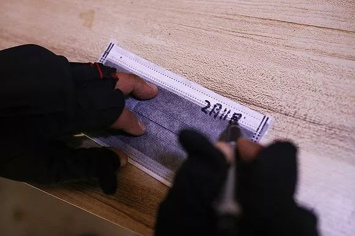
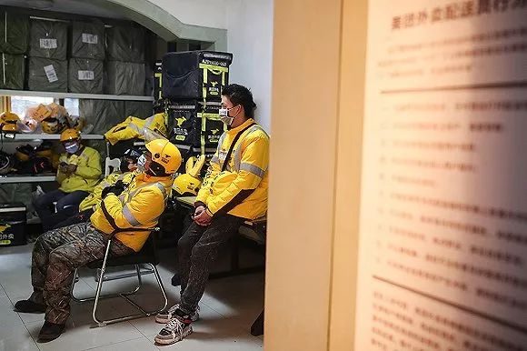
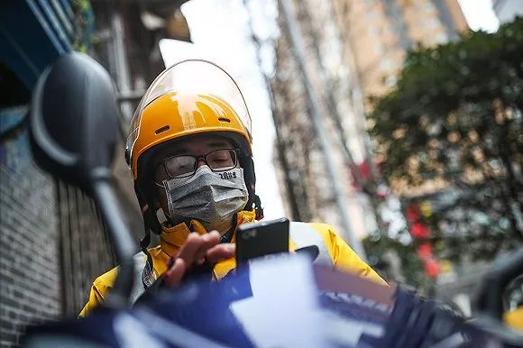
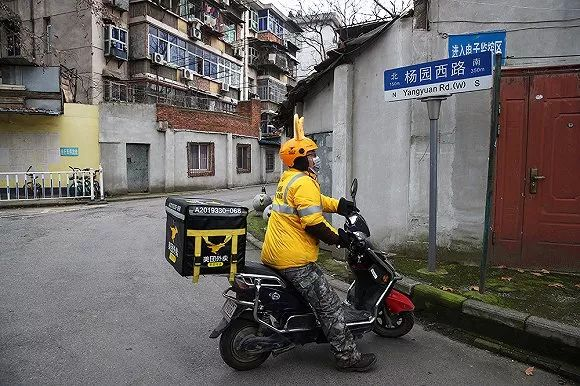
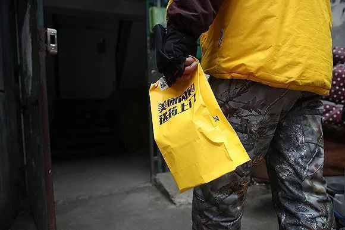

武汉呼叫：封城内外两个女孩的连线
原文链接 备份链接 我是肖途，2019 年加入 “BIE别的” 团队的编辑，武汉人。节前，我在最后一刻退掉了回武汉的车票，但这不代表我的春节过得有丝毫轻松。我的爸爸妈妈在武汉，我每天只能与他们视频通话。 早上醒来，北京下过雪了，一场没由来 …
撰文 | 阳关 摄影 | 闻夏
“
老计说，在外人眼中武汉现在是座空城，但每一个房间后面，都是一个个活生生的生命，他们都在等着武汉一天天变好。
”
送外卖的老计被关注，居然是因为这场波及全国的疫情。最早，他在微博上被人发现。他给自己取了个名号——“外卖老哥”，每天更新封城后的武汉生活，点点滴滴，写日常小事儿，挺温暖的，一下就吸引了很多网友。
武汉封了城，医生吃热饭成了问题，只能吃泡面。老计决定开工。他和其他外卖兄弟，穿着鲜艳的黄，像摆渡人，在武汉空荡荡的大街上疾行，从这儿到那儿，继续维持着这座城的运转。
 2020年2月11日，武汉，每天开工前，老计都会对外卖箱进行消毒。
2020年2月11日，武汉，每天开工前，老计都会对外卖箱进行消毒。
2020年2月11日，武汉，老计在口罩上写下使用当天的日期。

2020年2月11日，武汉，外卖骑手每天测量体温，并记录在“骑手安心卡”上，佩戴在胸前。

2020年2月11日，武汉，老计（右二）和其他外卖兄弟在外卖站点内等待开工。
除夕一过，老计就开工了。开工的第一单去了武汉大学中南医院，第二单是武昌医院，都是发热病人收治点。两个单子都在同一家餐馆订了鲍鱼饭。大部分外卖员不敢去医院，老计不怕。他身上长着一股荆楚人惯有的“匪气”。他总说，没那么可怕啊。然后在微博上告诉网友，这两个医院超负荷运转，医生顶不容易。
日头照常升了又落，老计也就照常给武汉人送餐。过去，武汉喧闹得很，车啊人啊，道上常常水泄不通。老计这样的外卖小哥，一整天都要连轴转。现在的武汉，路上冷清清，顶多有些医用车辆和物资运输车在跑。路宽了，过去四十分钟送到的单，现在十分钟就送到了。封城后，餐馆少了，叫单的人也少了，人们宁愿躲在家里自己做饭吃。
但老计依旧忙叨叨的。封城第四天，有一单外卖的备注，说家里没存粮了，托他买生鸡蛋。还有一单，让他跑腿帮送，备注里写“妈妈做的饭给爸爸送去，爸爸是前线医生，辛苦外卖小哥了。”老计看得想流眼泪。
微博上也有不少粉丝私下找他。有个女孩向他求助，说自己咳嗽了，自我隔离，很无助很害怕。老计不晓得怎么安慰她，就把她的求助信息发上了微博。全国各地成千上万的网友发来鼓励和支持，老计截了图，转发给女孩。他不知道自己该说什么，就出门帮女孩买了药，送到她的小区楼下。
还有人找老计买菜、买药。有次他跑了十几个药房，帮一位武汉的母亲寻找温度计和消毒水，实在买不到，买了一大包蔬菜安慰她。有好几天早晨，他跟武汉的大爷大妈一块儿在超市抢大白菜，动作慢些，连菜叶子也找不到了。
有时老计也会迷茫，不知道自己能做什么，不能做什么。有一回，他看到有个老人在路上打车，一直打不到，老人状态看着不好。换做平时，老计肯定要送她，但在这个特殊时期，他只能低头默默走开。

2020年2月11日，武汉，老计在手机上接单。老计送单，口罩戴得严实。他时刻提着神，送餐走楼梯，按电梯用车钥匙。

2020年2月11日，武汉，老计接到一单去药房取货的订单。目前平台的订单，基本上都是配送酒店或者一些小区。
2020年2月11日，武汉，疫情期间，老计经常穿梭于武汉市的各个药房之间。今天的订单主要购买感冒药和眼药水。

2020年2月11日，武汉，老计在药店内取货，店员大多会明显与外卖员保持一定的安全距离，避免正面接触。
老计是去年夏天来武汉的，39岁了，开始送外卖。在这之前，他当过服务员，干过广告行业，被骗过，创业也失败了，于是开始重新思考人生。
老计是湖北十堰人，在武汉上过四年大学。以前他对武汉的印象不太好，它像个大乡镇，一直在建设，灰蒙蒙的，道上总是坑坑洼洼。老计晕车，每次坐车晃晃悠悠，晕得一塌糊涂。大学一毕业，老计就离开了武汉。十堰、深圳、广州、重庆，全国各地折腾一番，又回了武汉。老计玩笑，自己不喜欢武汉，但冥冥之中又离不开武汉。他的亲朋好友都在这儿。
又回到武汉后，老计就开了微博，记录在这个江城送外卖的生活点滴，好的孬的，他想起来就记上一笔。1月23日，武汉封了城。老计想，得记录点什么。
他写微博挺勤快。在他笔下，武汉冷冷清清，门关了，店闭了，但温度依然不减。经常有人下单给医生送外卖，打电话喊他给医生“送份海鲜饭咯”“买点果子咯”。有天夜里，他的电动车坏了，推了三公里走路回家。终于快走到小区，停下抽了根烟，头顶突然响起一阵齐喊“武汉加油”。他没忍住，眼眶湿了。老计上微博记了这一笔：“麻蛋，烟熏了眼睛！”

2020年2月11日，武汉，老计按导航路线配送，发现路被封掉了，隔离墙上贴着封路通知。经过询问，老计绕了一大圈才完成配送。

2020年2月11日，武汉，疫情期间，绕路配送是常有的事。

2020年2月11日，武汉，老计拎着一袋药品准备进入居民楼，放在家门口。现在的订单以购买药品和生活用品为主。

2020年2月11日，武汉，居民需要下楼来取件，全程进行无接触式配送。
老计说，在外人眼中武汉现在是座空城，但每一个房间后面，都是一个个活生生的生命，他们都在等着武汉一天天变好。有时他也想，现在街上流动的那些黄色，送什么都不重要，外卖小哥的存在是种安慰，他们在证明“武汉不是座空城！”。
春节期间有一阵，武汉连下了好几天雨。好不容易出了太阳，天空澄蓝，老计骑着车在太阳底下晃悠，绕了几圈，发现一家可以过早的店，有热干面吃。老计钻进去，吃了一大碗。
吃完面，他在微博上写：“武汉人只要能吃上热干面，那就都不是事儿！”

2020年2月11日，武汉，老计骑车行驶在武汉长江二桥前。
未经授权 禁止转载

原文链接 备份链接 我是肖途，2019 年加入 “BIE别的” 团队的编辑，武汉人。节前，我在最后一刻退掉了回武汉的车票，但这不代表我的春节过得有丝毫轻松。我的爸爸妈妈在武汉，我每天只能与他们视频通话。 早上醒来，北京下过雪了，一场没由来 …
原文链接 备份链接 摘要：新型冠状病毒肺炎袭城之后，外卖员老计（化名）觉得武汉的马路变宽了，武汉人的面目也温柔下来。大年初一，他给武昌医院的医生送了一餐鲍鱼饭。才华街友谊大道路口的药店口罩卖完了，消毒液还有少量存货，他秒发微博，广而告之。 …
原文链接 备份链接 作者 | 李伟 出品 | 棱镜·腾讯小满工作室 欢迎下载腾讯新闻APP，阅读更多优质资讯 1月25日16点多，大年初一。湖北黄石市中心医院、大冶市人民医院下了两份订单：米、面、食用油、水饮、干调，算下来共近6吨的物资， …
原文链接 备份链接 《创新经济战疫计划》，是燃财经在新型肺炎疫情期间推出的特别栏目，关注创新经济企业遇到的新难题、商讨应该采取的新对策，希望能够帮助中小企业一起战胜挑战、把握机会。 作者 | 唐亚华 编辑 | 魏佳 2月10日起，北京、上 …
原文链接 备份链接 健身教练辛野和他送外卖的电动车 90后健身教练辛野， 在武汉封城之后， 苦于市民买日常用品非常不便， 骑手平台订单爆满也没有人接， 于是，他下载了骑手软件， 成为一名临时外卖员。 武汉街上还在奔波的人就是外卖员，辛野 …